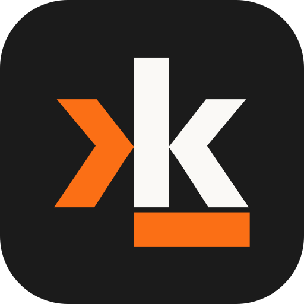

A terminal that answers to nobody but you.
macOS · Linux · Windows | free, and AGPL all the way down
Every command and its output is one addressable thing — filter it, search it, copy it, run it again.
Open a file, search a codebase, read a diff. No second window, and no language server you had to install first.
Browse, edit and run on any host you can already reach. One small daemon rides the connection you already have.
Claude Code, Codex and friends keep running when the link drops, and come back to the same conversation.
AI runs against credentials you supply and endpoints you pick — including ones on hardware under your desk.
No account to create, no telemetry to switch off, no round-trip between pressing enter and getting a shell.
macOS — signed and notarized, Apple Silicon. Homebrew is the short way:
Or take Kyon.dmg from the latest release.
Linux — download Kyon-x86_64.AppImage, chmod +x, run it.
Windows — the installer, or the portable zip if you would rather not install anything. Both builds are unsigned, so SmartScreen warns once: “More info”, then “Run anyway”.
Kyon.dmg | macOS, Apple Silicon — signed and notarized |
Kyon-x86_64.AppImage | Linux x86_64 |
Kyon-windows-<arch>-setup.exe | Windows x64 / arm64, installer |
Kyon-windows-<arch>-portable.zip | Windows x64 / arm64, nothing to install |
kyon-web-*.tar.gz | the browser client |
kyon-src-*.tar.gz | complete source for that build |
Kyon is a fork of Warp, licensed under the GNU Affero General Public License v3.0.
The source of each build ships beside the binary made from it, so it travels with the download rather than depending on a repository still being there in five years.